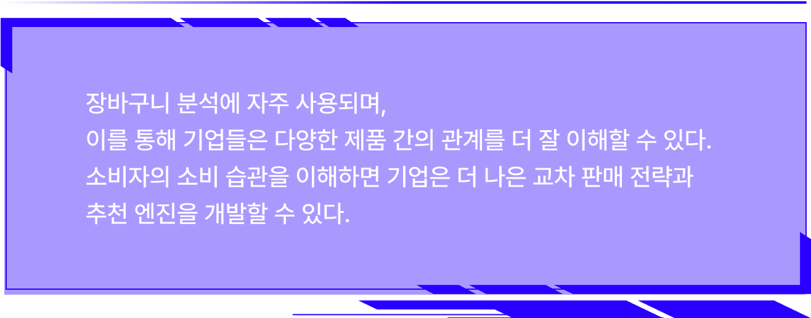

Content

패턴을 탐색하여
1 추출과정
방대한 데이터 중 해결할 비즈니스 문제에 대한 정의와 결과에
대한 목표를설정하여 목표 데이터를 추출한다.
데이터 마이닝에서는
수치로 된 정형적인 데이터 뿐만 아니라 인간의 행동 패턴, 감정, 습관 등
비정형 데이터도 함께 분석된다.
2 전처리 과정
원자료(raw data)를 데이터 분석 목적과 방법에 맞는 형태로
처리하기 위하여
불필요한 정보를 분리 제거하고, 가공하기 위한
예비적인 조작과정인 전처리 과정
선정된 데이터에서 부정확한 값이나
중복된 레코드를 삭제하거나 정리, 조정하는 등
데이터의 질을 향상시킨다.
3 변환과정
데이터 변환과정은 데이터마이닝 기법에 적합한 형태로 데이터를
변환하는 것으로
데이터웨어하우스가 구축된 경우 구축과정에서
이미 실행되었거나
추가작업이 필요한 경우,
데이터웨어하우스 내에서 작업하는것이 효과적이다.
4 데이터 마이닝
업무의 성격과 데이터 구조에 알맞은 데이터마이닝 모델과 기법을
적용하여
분석한 결과를 최종 사용자가 이해하기 쉬운 형식으로 표시한다.
5 해석 및 평가 과정
데이터마이닝의 결과는 사용자가 해석가능한 용어 또는 의사결정에
이용할 수 있는
지식으로 표현되어야 한다. 성공적인 데이터마이닝 테스트의
결과는 의사결정 문제의
해결을 위해서 사용되며, 사후처리를 위해
다른사람이 시스템에 통합되거나
필요로 하는 사용자를 위해서 문서화 된다.

이 상품은 어떠세요?
Yes
Yes